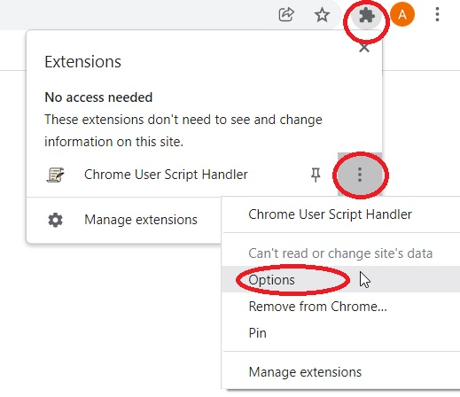
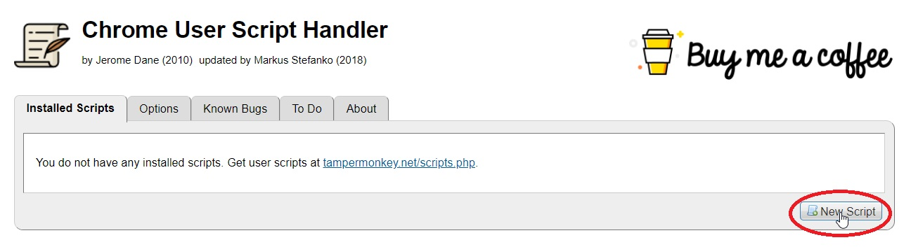
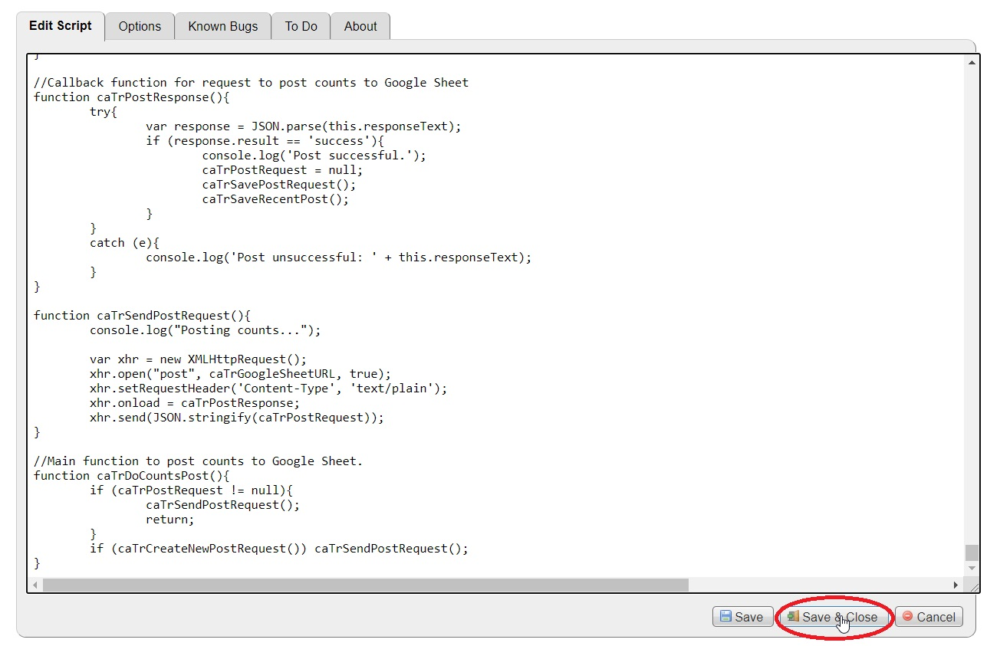

CasiTrack
CasiTrack counts shipments and helps with automatically setting orders to Ship status.
CasiTrack loads automatically using the Chrome User Script Handler Google Chrome extension.
When the extension is added to Chrome, follow these directions to install CasiTrack:
Open the extension settings (Example Image)

Click New Script (Example Image)

Erase the contents of the new script. The text box should be empty.
Click one of the links below, choose the one that applies to the station being set up.
Copy all the contents of the chosen linked page (Ctrl+A to select all), and paste it into the empty new script field.
Click Save & Close (Example Image)

To remove them, open the settings of the extension and remove them there.
CasiTrack Versions:
Packing
Packing for 1300
Packing for Hotseat